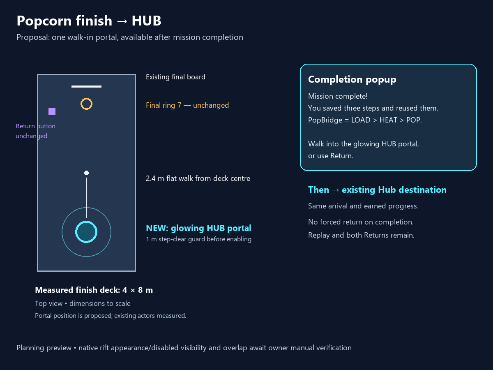

Mission complete! You saved three steps and reused them. PopBridge = LOAD > HEAT > POP. Walk into the glowing HUB portal, or use Return.
The portal becomes available after successful final completion and the existing reward. If you are already standing within 1 m of its centre, it stays disabled until you step clear, then you can deliberately walk back in. Entry clears the current attempt and sends you to the existing Hub destination.
One new native teleporter. Existing course, rewards, targets, Return buttons and Replay stay. No new sign or imported asset.
Offline checks pass; implementation awaits explicit human approval. Rift appearance while disabled, movement, readability and arrival remain owner manual checks. No gameplay testing was run.
Plan · Full course and distant Hub annotation